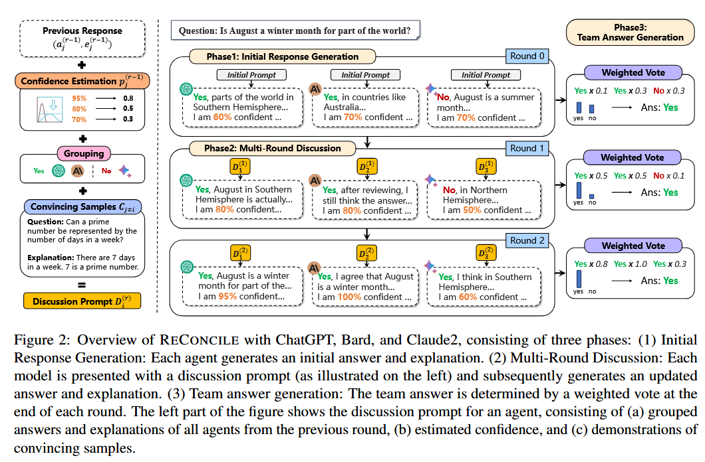

提出两种多智能体合作方案。
文献： * RECONCILE: Round-Table Conference Improves Reasoning via Consensus among Diverse LLMs * ReConcile code * ReAgent: Reversible Multi-Agent Reasoning for Knowledge-Enhanced Multi-Hop QA * []
RECONCILE
RECONCILE(Round-Table Conference Improves Reasoning via Consensus among Diverse LLMs)，通过不同预训练模型相互合作，通过一致性完成推理任务。
多智能体合作的有效性，来源三个方面： 1. 解决方案多样性 2. 估计每一个智能体的一致性 3. 利用一致性使得不同智能完成合作
左边是传统的思路，通过单个预训练模型，利用不同的prompt搭建智能体，通过不同的结构设计达成目标。右边这篇论文提出的新方案，采用多个预训练模型通过多轮圆桌讨论对话完成任务目标。

左侧是一轮的流程，右侧展示了三轮对话之后的情况。

算法流程图。
ReAgent
ReAgent(a Reversible multi-Agent)是一种新的多智能体架构，通过显式的回溯历史记录增强多跳步(multi-hop)的推理。
解决multi-hop推理问题，需要的信息碎片多、逻辑链条长，对于LLM来说具有挑战性。已经有的解决方案是通过模型的推理，这个依靠模型训练阶段的表现，另一种方案是MAS。MAS通过前向的逐步推理，能够有效提升模型在multi-hop问题上的表现能力，但是其有一些问题，如果模型在最开始就出现错误，之后很难对这个结果进行纠正。一些MAS框架开始着手于解决这个问题，包括ReAgent。
上图是ReAgent的体系架构，分为推理与回溯两部分。左边是推理部分，分为执行层、监督层、交互层：在执行层中将复杂的任务分解为子问题，给出推断然后检查验证，最后整合答案输出；交互层负责提供信息的读取的接口；监督层负责处理冲突，并且检查是否符合规则。右边的回溯机制，展示了执行与监督层是工作交互的逻辑。